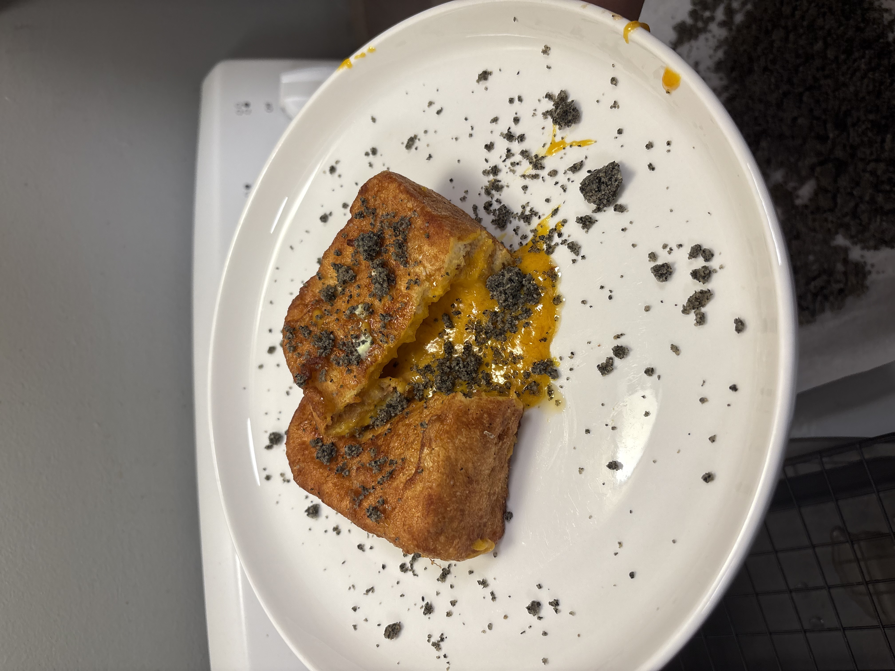

First, you mix all the dry ingredients(milk powder, sugar, custard powder) in a bowl and mix them around. Then, chop up room-temperature unsalted butter into smaller squares and add to the mixture. Then separate the yolks from all the salted eggs and mash them up into a paste; then throw those bad boys in. Now mix all that up in a bowl with your hands until it's all together. Then you are going to toss that into the fridge for like 30 minutes.
Now, we’re gonna start putting together the French toast. Stack the bread in 3’s on a cutting board. Make sure the bread is aligned, and then in 4 quick cuts, chop the edges off. The crust is healthy, but it doesn’t have the best flavor. You can now take the custard out of the fridge, if you didn’t already. Cut out a hole in the middle of the bread slice; this is where the custard is going to go. In another bowl, open up your non-salted eggs and throw in a pinch of salt, and mix it up. This is going to be our seal for the toast and the outer layer. Now we’re going to put it all together. Connect the first two pieces together with the egg wash, and then throw in a good amount of egg custard into the middle piece. Then seal the final top piece on, and you’re ready to cook.
Now we’re going to cook it. In a medium saucepan, put in half an inch of oil and bring it to a heat. Set the heat pretty low; the oil shouldn’t be bubbling until the toast goes in. Once the oil has a more loose and “liquidy” texture in the pan, you can add the toast. To cook the toast, I recommend tongs or chopsticks. You want to dip the whole bread inside the egg wash and completely cover that thing. Then you want to stick the long side of the bread inside the oil, and let that sit on the bottom. Once it looks medium-cooked, then flip to another side and repeat until all the sides are sealed. Then place it on its side and start basting. Once the side gets almost brown, flip it over and get basting again. Once both sides are slightly brown, place it on a rack to dry out.
Wait like 5 minutes, then eat with your favorite ice cream, crumble, or whipped cream.
